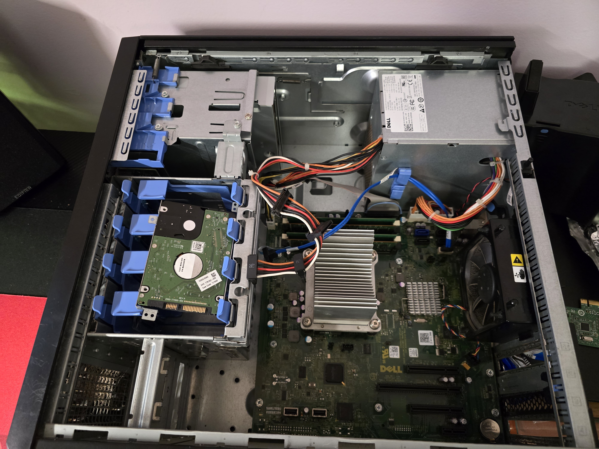
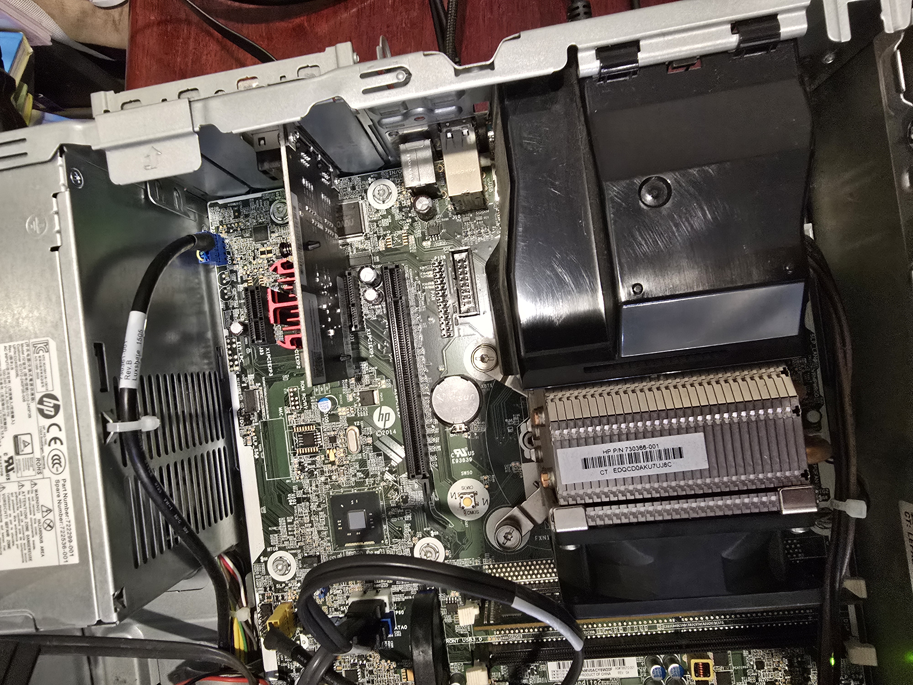
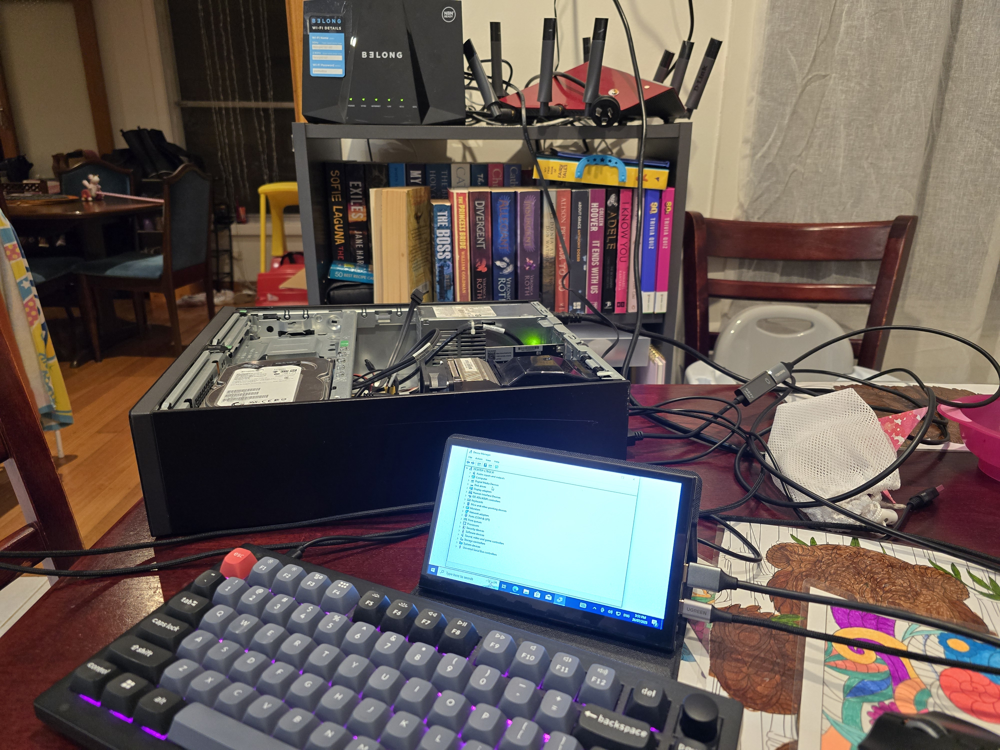
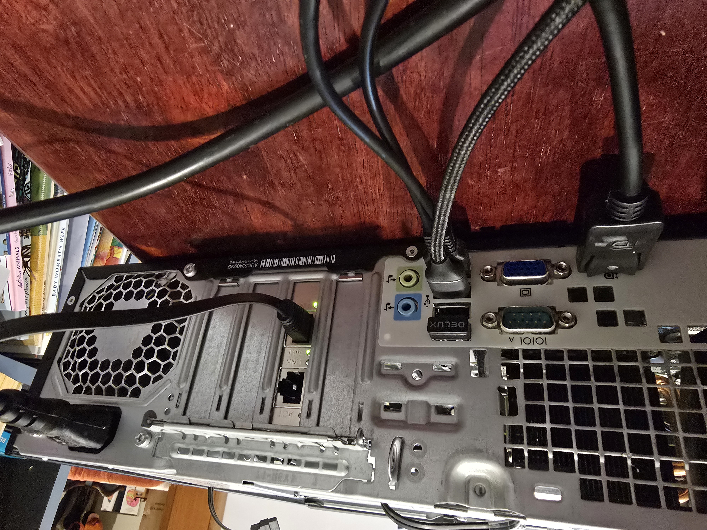
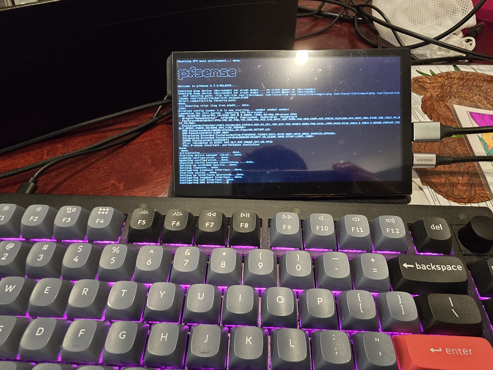
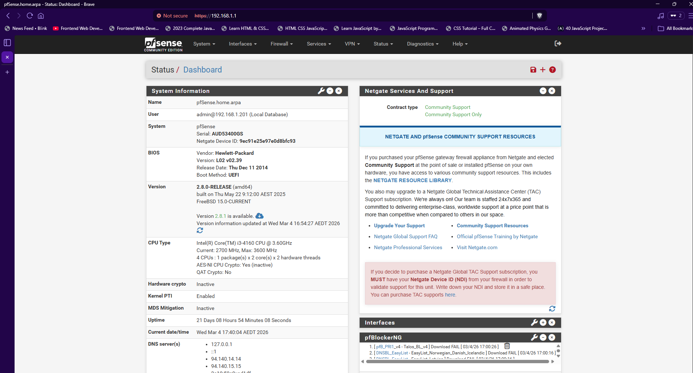
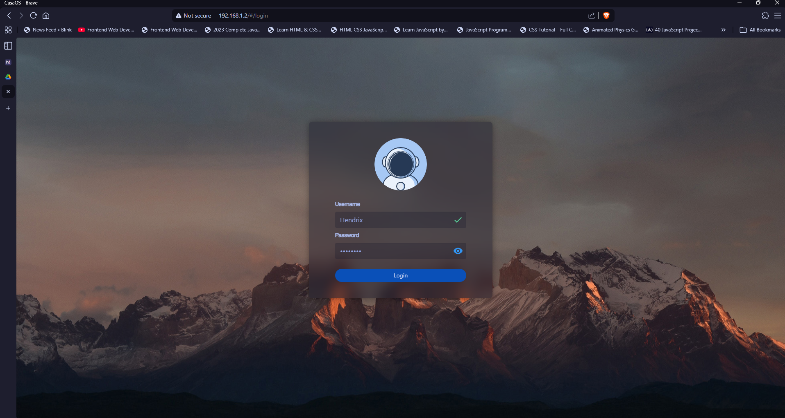

Building My Home Lab
A personal project to learn networking and server management
Overview


I built a home lab purely because of my interest in creating a server and hosting some of the services myself and not relying on subscriptions like Google Drive or Microsoft OneDrive. This interest led me to discovering PfSense wherein I can grab an old PC and turn it into a router and set my firewall rules. Given my limited budget as a student, I searched Facebook Marketplace for a good deal.
Hardware & Software
- HP ProDesk 400 G1 (router) and Dell PowerEdge T110 II (server)
- Dual-port NIC (Intel 82575)
- pfSense
- Ubuntu Server
- CasaOS
- Immich
- Jellyfin
Router Setup Process
I started this project by gathering what I need to make the router work. I purchased a dual-port NIC from amazon and I had to make sure it uses an Intel chip so that I would not really worry about pfSense compatibility. Next, I attached the NIC in the PCIE slot in the computer's motherboard.

I booted it up to check if the NIC is working and recognised by the computer. I went to the device manager and checked the network adapters. I see that it is present and recognised by the computer, I then connected it to the internet using the cable I have and plugged it into the port of the NIC and not in the port that came with the motherboard.


After all of that, I downloaded the image of pfSense and created a bootable drive using Rufus. I used a spare 32GB USB drive as my bootable media. I did the downloading and burning of the image in another computer since it had a bigger screen and Rufus was already available in that computer. So, I ejected the USB drive once Rufus finished burning the image into it and went back to router computer. I plugged the drive in and restarted the computer to enter into its BIOS. In the BIOS, I navigated to the boot management and disabled secure boot. I also selected my USB drive as the priority boot device and then saved and exit. It was successful and now I am in the configuration screen of pfSense. I just followed the prompts for the installation of pfSense in the hard drive of the computer.

The setup wizard appeared after the installation and this is where I setup my network. For the DNS, I used AdGuard DNS to filter DNS queries. This will allow me to block some ads and trackers at the network level. Next, the DHCP settings I left it as default. After that, the admin password was set and I did my best to think of a safe password that has more than 10 characters with a mixture of upper and lowercase characters, numbers, and special characters. I then stored that password securely offline where only I have access to. When pfSense finished the configuration and setup, I was brought to the home page where I got really overwhelmed with the amount of things I can do for the router. I had no idea what most of it is going to do to my network. Understanding most of the routing and networking things is a learning in progress for me.

I was happy when I connected to the internet and it worked with no issues. If you are wondering how I connected multiple device to it knowing that it only had two ports and the computer did not have any antenna to send wireless signal to smart devices and other computers. I used the previous router that was connected to the NBN box and used it as an access point and switch. I just had to disable the DHCP in that router, so all it did was send and receive the wireless signals.
Server Setup Process

My server project did not get any sort of documentation due to me being too excited to try out the new stuff. Once I got my hands on the machine from marketplace, I immediately opened it up and checked the space I have for the drives and also the fans if it is filled with thick dust. I also ordered two 2TB WD Blue hard drive and a 250GB SSD for the operating system from Centrecom.
Once those drives arrived, I went to work immediately. I created a bootable drive of Ubuntu Server and loaded it in the computer. In the configuration setup, I installed it in the 240GB SSD, no redundancy for it unfortunately due to budget. I also assigned a static IP for the server so that I can easily access it. Once it was up and running, I used curl to install CasaOS on top of Ubuntu Server. I chose CasaOS since it looked like it was beginner friendly when it comes to accessing Docker contained services.
I used to run Immich and Jellyfin to test out the possibilities of what I can do in a home server. I was also looking at using Nextcloud to have it replace our Google Drive in the household. This project is currently on pause due to personal circumstances. I was also planning to move over to Proxmox and learn virtual machines and Docker, which is why this project did not get any documentation. Most of the things I did in this server project is just about touching the surface of servers and its management processes. This post will be receiving updates once I get the time to move over to Proxmox and deployed the services I wanted.
Challenges & Lessons Learned
For the router, the main challenge in doing this project was trying to understand how to configure the main interfaces and the amount of research to understand the basic settings that a beginner can do. This includes the firewall rules, subnets and setting a range of address pool for DHCP, DNS, and pfBlocker configuration. The server portion was where I had to pull my hair because of the amount of resources I had to search through in order to just get started. There are a lot of options there regarding how to deploy the services I wanted for our household. Through this, I was able to learn about CasaOS, services deployed and run using Docker, and Proxmox.
Future Plans
For networking, here is a list of what I am planning for the future:
- VPN Server(OpenVPN) to enable secure remote access into the home network
- VLAN Segmentation to separate IoT, personal, and lab network
- I want to also learn how to diagram my network setup for documentation of infrastructure and topology
Server deployment and management would hopefully see this in the future:
- Use of Proxmox to manage VMs and deploy Docker applications
- Reverse Proxy using NGINX and Let's Encrypt for SSL
- Implement RAID for storage redundancy
- Start configuring local autobackups